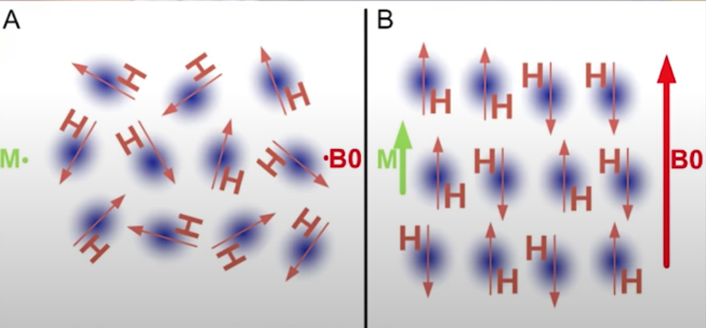

本文是斯图加特大学和图宾根医学院联合的MIDAS项目中的一部分，也是我研究生的小论文，也是读书这么多年做的唯一一个目前比较前沿的项目了，希望自己几个月的努力能对正在做类似项目或者写相关论文的同学有所帮助。
背景
磁共振相关基础知识
MRI基本原理
在强大外加磁场的作用下，体内的氢质子就会发生重排，能量低的质子就会顺着外加主磁场的方向（低能态），能量高的质子就会逆着外加磁场的方向（高能态）。但顺着外加磁场方向的质子远占优势，此时人体就带有磁性了，称为磁化。如下图所示A为施加磁场前氢质子的排列状态，B为施加磁场后氢质子的排列状态。
